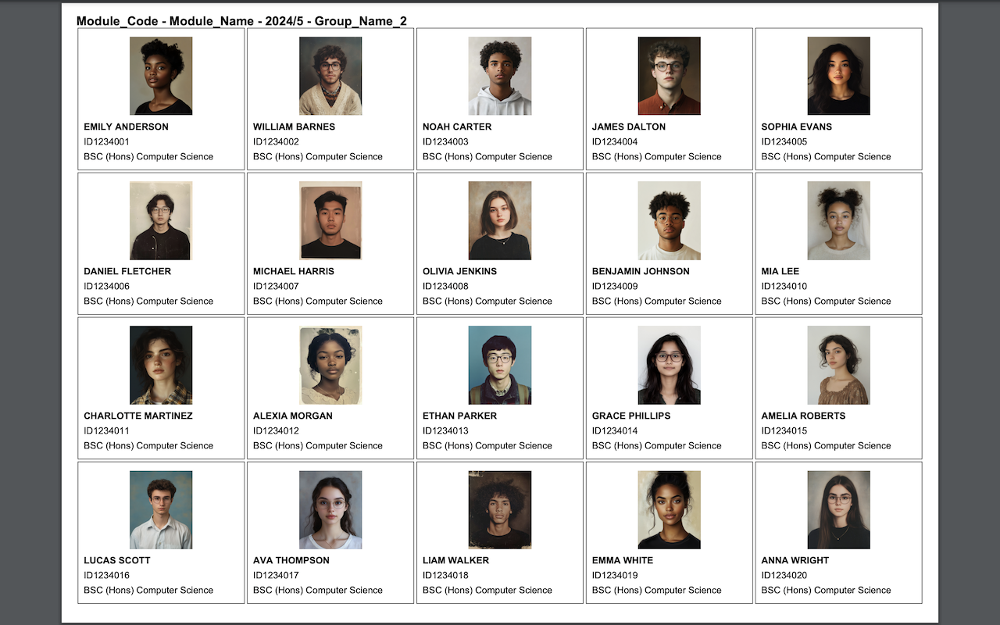

Student Cards PDF Generator
A Chrome extension that extracts student information from the University's SITS system and generates printable student cards, enabling lecturers to learn student names and build meaningful relationships from day one. Because student engagement improves when students feel recognised and valued.

Impact & Reach
Active Users
Potential UK Universities
UK HE Market Using SITS
Different Page Types Supported
Why it matters: Student engagement improves when lecturers and tutors build strong relationships with their students. This tool enables instructors to address students personally from day one, creating an inclusive environment where every student feels recognised and valued.
The Pedagogical Purpose
This extension is grounded in a simple but powerful principle: student engagement improves when lecturers and tutors build strong relationships with their students. By enabling instructors to learn student names quickly and address them personally from the first class, the tool supports several key educational outcomes:
Five Key Benefits for Student Engagement
Recognition
Students participate more actively when they feel valued and recognised as individuals, not just names on a register.
Belonging
Using students' names creates inclusive classroom environments where everyone feels they belong.
Early Intervention
Personal familiarity helps tutors identify struggling learners early and provide timely support.
Collaboration
Strong rapport encourages students to ask questions and seek help without hesitation.
Efficiency
Having accessible student details reduces administrative overhead during assessments, tutorials, and one-on-one meetings.
Core Philosophy: Learning & Teaching + Coding + Strategy = Real-World Impact in Education. This tool embodies that approach by combining pedagogical understanding with practical technical solutions.
The Technical Problem
The University of Westminster uses SITS (Student Information Technology System) for managing student records. When the university updated their SITS implementation to use DataTables with server-side pagination, several challenges emerged. Student lists were split across multiple pages (10 students per page), requiring manual navigation through dozens of pages for large classes. For classes with 100+ students, there was a top-level navigation (groups of 100) and bottom-level navigation (pages of 10), making data extraction extremely tedious. Staff needed to access student data from three different SITS views (module lists, seminar groups, and student search results), each with different HTML structures. Creating student cards manually meant copying data, formatting images, and creating documents for potentially hundreds of students.
The Solution
The Chrome extension automatically detects the current SITS page type and adapts extraction accordingly, navigates through DataTables pagination to collect all student records (up to 100 per group), extracts student photos, names, IDs, courses, and enrolment status, and generates professional PDF cards with 20 cards per page in landscape format. The extension includes intelligent headers showing module information, group numbers, and page numbers, and handles groups larger than 100 students by providing clear instructions for manual navigation.
Technical Highlights
The extension implements a smart polling mechanism that tracks student IDs to automatically navigate through DataTables AJAX pagination while detecting when all pages have been processed, with safety limits and proper wait times to handle network latency. For large modules with two-level navigation, the extension automatically handles bottom-level pagination while providing clear instructions for manual top-level navigation. Page type detection based on document title enables specialized extraction logic for three different SITS views with varying HTML structures, handling field prefixes, column indices, and layout variations. All student photos are converted to base64 JPEG format using canvas before being embedded in the PDF, ensuring consistent format and compatibility across different image sources.
Technology Stack
Key Features
The extension provides smart data extraction by automatically detecting the page type ("Students on Module", "Evision Module List photo retrieve", or "Student Search"), extracting module code, module name, session, and CMIS group information, and handling field prefixes while gracefully managing missing photos and incomplete data. Automatic pagination handling resets DataTables to the first page before extraction, clicks through all available pages, detects completion by tracking student IDs, and includes safety limits to prevent infinite loops.
Professional PDF generation uses landscape A4 format with 20 cards per page (5 columns × 4 rows), intelligent headers with module info, group numbers, and page numbers, automatic photo sizing with aspect ratio preservation, smart text wrapping for long names and course titles, and descriptive filenames. The user experience features simple one-click operation from the browser toolbar, clear usage instructions, comprehensive console logging for debugging, and error handling with fallbacks for missing data.
Development Journey
This project evolved significantly based on real-world usage and university system updates. Version 1.5 added support for the "Student Search" page type, implemented enrolment status display, and fixed field prefix issues in extracted data. Version 1.6 brought a pagination overhaul that rewrote the logic to handle DataTables AJAX properly, fixed duplicate script injection causing double execution, added group/page tracking to PDF headers and filenames, updated column indices after university SITS layout changes, and improved wait times and page change detection to prevent skipped pages.
Future Expansion
SITS is used by approximately 70% of UK universities, representing over 100 potential institutions. Future development could include making the extension configurable for different universities' SITS customisations, adding institution-specific branding (logos, colors), supporting additional SITS page types, implementing chrome.storage for cross-page state management, creating a feedback mechanism for compatibility issues, and exploring integration with other university systems beyond SITS.
Lessons Learned
Understanding how university staff actually use SITS revealed edge cases (like two-level pagination) that weren't initially apparent, reinforcing that user research is essential. University systems change frequently, making adaptive selectors and detection logic crucial for longevity. AJAX pagination requires careful timing—too fast causes skipped pages, too slow frustrates users. Testing with actual university data revealed issues (duplicate injection, wrong column indices) that wouldn't appear in controlled environments. Clear usage instructions are as important as the code itself when your users are academics, not developers.
Want to collaborate? If your institution uses SITS and you'd like to test this extension or discuss expanding it to other universities, I'd love to hear from you!